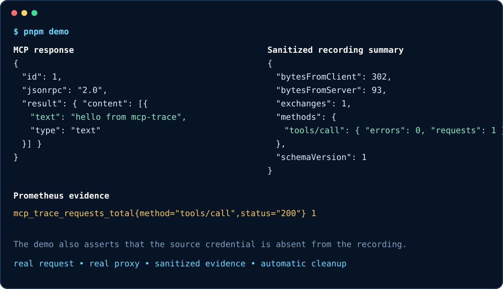

Transparent
Streams JSON and SSE through a fixed upstream endpoint with backpressure and cancellation propagation.
A transparent, security-first observability gateway for modern MCP Streamable HTTP. Trace, measure, record, inspect, and safely replay JSON-RPC and SSE traffic without modifying the client or server.
Early preview · MIT licensed · Node.js 20.19+ · local-first defaults
Streams JSON and SSE through a fixed upstream endpoint with backpressure and cancellation propagation.
Records metadata only by default, strips credentials, hashes legacy sessions, and requires explicit replay execution.
Exports bounded Prometheus metrics and OpenTelemetry spans while retaining sanitized NDJSON evidence locally.
MCP client ── POST / GET / DELETE ──▶ MCP Trace ── transparent HTTP ──▶ MCP server
│
├── Prometheus metrics
├── OpenTelemetry spans
└── sanitized NDJSON recording
MCP Trace does not implement MCP methods, authenticate clients, discover servers, or mutate JSON-RPC bodies. The upstream server remains the protocol authority.
npx -y @ryux1/mcp-trace@latest proxy \
--upstream http://127.0.0.1:3001/mcp
Point the client at http://127.0.0.1:7331/mcp. The gateway listens on
loopback by default.

The repository includes a deterministic end-to-end demo, wire-level integration tests, clean-consumer package installation, a compatibility matrix, and checked-in benchmark samples. The current microbenchmark also publishes material proxy overhead instead of hiding it.